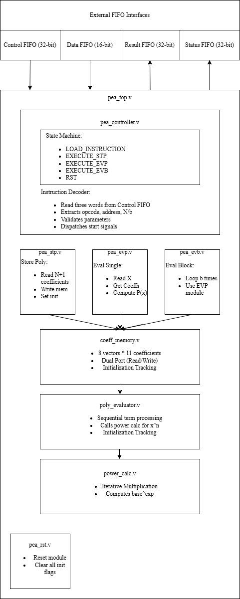

Artifact 3 — Polynomial Evaluation Accelerator
An ENEE408C team project (Fall 2025) implementing a Polynomial Evaluation Accelerator as both a LIDE-C software actor and a LIDE-V Verilog hardware actor, then exploring four hardware variants synthesized on a Zynq UltraScale+ FPGA.
- SystemVerilog / Verilog
- LIDE-V (dataflow)
- LIDE-C / C reference
- AMD Vivado
- Zynq UltraScale+ (xczu5ev)
- Horner’s method
- Kogge-Stone adder
- dxtest framework
Download the full report (PDF) · ENEE408C, Prof. Shuvra S. Bhattacharyya, December 2025 · Team: Nicole Baker, Jeremy Bloom, Graham Rogers, Andreas Tzitzikas
My contribution
I owned the initial Verilog architecture (“Design One”) and the synthesis pipeline. After the team co-designed the actor’s dataflow table and FSM topology, I implemented the hardware so that each Verilog module mapped one-to-one onto a function in the C reference — a deliberate decision that let us run the same test vectors through both implementations and validate the hardware against the software for free. I built the synthesis flow in Vivado, wrote in-depth module documentation, and then helped my teammates extend my base into Designs 2 (Horner’s method), 3 (Kogge-Stone adder), and 4 (single-cycle instruction decode). On the report’s Pareto plot of throughput vs. utilization, Design One ended up being the winning design.
Architecture

Highlights
- Dataflow architecture with five cooperating finite state machines (controller + STP/EVP/EVB/RST + polynomial evaluator + power calculator) coordinating handshaking and resource sharing across nine Verilog modules.
- Centralized
pea_controllerFSM with five states (LOAD_INSTRUCTION, EXECUTE_STP/EVP/EVB, RST) decodes the opcode, validates parameters, and dispatches start signals to the operation modules. - Dual-port coefficient memory holding 8 vectors × 11 coefficients of 16-bit signed values, with initialization tracking and concurrent read/write ports for back-pressure-free batch evaluation.
- Polynomial evaluator with a six-state pipeline (IDLE, WAIT_POWER, MULTIPLY, ACCUMULATE, NEXT_TERM, DONE) coordinating with a three-state iterative
power_calcmodule. - Comprehensive testbench validated against the C reference using the
dxtestframework: STP / EVP / EVB / RST unit tests plus multi-instruction sequences, covering edge cases (degree 0, max degree 10, negative coefficients) and every error code. - Pareto analysis on the Zynq UltraScale+
xczu5ev-fbvb900-2-i: Design One delivers 9.42 MIPS at Fmax = 690 MHz with 218-unit utilization — the best throughput-per-resource of all four explored designs.
Context & reflection
This was the capstone project for ENEE408C in Fall 2025: a four-person team building a Polynomial Evaluation Accelerator first as a LIDE-C software actor and then as a LIDE-V hardware actor, with a written engineering report comparing four hardware variants on a Zynq UltraScale+ FPGA. My specific responsibility was the initial Verilog architecture — the controller FSM, the per-instruction operation modules, the dual-port coefficient memory, and the polynomial evaluator/power-calculator pair — along with the synthesis pipeline in Vivado and the unified test harness that lets the same input vectors validate both the C and Verilog implementations. After that base was working, my teammates each layered an alternative on top: Horner’s method (Design 2), a structural Kogge-Stone adder (Design 3), and a packed single-cycle instruction decoder (Design 4). The four designs gave us a real Pareto frontier to analyze in the report.
Two things from this artifact matter most to me. First, the standardized test pipeline: by deciding early that every Verilog module would mirror a C function and that both implementations would consume identical test vectors, I gave the team a force-multiplier — bug-for-bug equivalence checking instead of bug-by-bug debugging, and a clean substrate for three teammates to swap in alternative designs without rewriting any verification. Second, the Pareto result: on paper, Designs 2, 3, and 4 all sound like obvious wins (Horner cuts the cycle count in half, Kogge-Stone is a textbook fast adder, packed decode saves two cycles per instruction). In practice, the Vivado synthesis numbers told a different story — the behavioral arithmetic and short critical path of the base design beat all three on real throughput-per-LUT. Watching that disconnect between the “clearly better” algorithm and the “actually better” synthesis result was the lesson of the project: in hardware, the toolchain has opinions, and you need measurements before you trust intuition. That habit — build the simple thing, instrument it, then justify any added complexity with numbers — carries directly into the Tomasulo CPU and the standard-cell placer above.